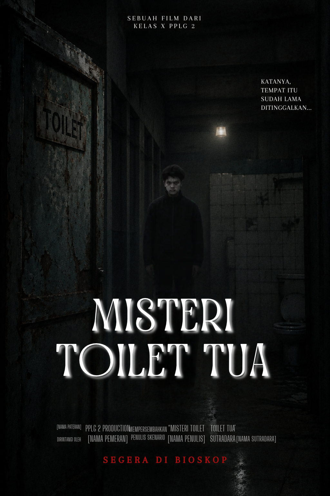
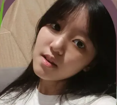
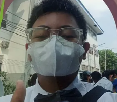
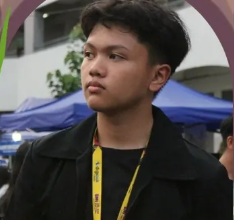

Budi menerima tantangan Dito untuk masuk ke toilet tua sekolah demi hadiah lima puluh ribu. Bersama Siska dan Rani, mereka menemukan pintu berdentang, senter yang mati, bau kentut, dan sosok wajah putih di dalam bilik. Misteri yang membuat mereka kalang kabut ternyata adalah Pakujati yang sedang lembur sambil maskeran. Malam itu berakhir dengan pengejaran sambil membawa sapu dan vlog yang belum juga berhenti.
01
Key Art — Misteri Sekolah
Poster film

Tantangan lima puluh ribu membawa Budi dan teman-temannya ke toilet tua sekolah. Hantu muka putih rupanya tak se-menyeramkan kabar burungnya.
DesainPoster Misteri
PemeranBudi, Dito, Siska, Rani
StatusSelesai
02
BTS Video — Horror Comedy
Di balik layar
03
Final Cut — Video Hasil
Film hasil
FINAL VIDEO
Rahasia Toilet Tua
Video hasil akhir tersedia dalam kualitas terbaik melalui Google Drive. Klik tombol berikut untuk membuka dan menontonnya.
▶ Buka Video Hasil ↗ Google Drive • Terbuka di tab baru04
Visual Planning — Storyboard
Storyboard cerita
04
INT. WARUNG SEKOLAH — SIANG
Tentang cerita kami
“
“Hantu muka putih”—ternyata rahasianya bernama Pakujati, bedak dingin, kuas masker, dan pipa sekolah yang rusak.
05
Behind the Camera — Tim Kami
Mengenal tim kami
01
Keyleen
SiskaAktor

02
Quin
RaniDirector & Aktor

03
Radit
DitoStoryboard & Aktor
04
Jhon
BudiAktor

05
Nathan
PakujatiEditor, Cameraman, Director & Aktor
06
Production Log — Catatan Pengerjaan
Jejak pengerjaan
FADE IN —
Proses penulisan naskah
Kami menyusun alur dari tantangan warung sekolah, perjalanan malam menuju toilet tua, sampai plot twist Pakujati yang kocak dan menegangkan.
01 / 03
WORKFLOW — ALUR PEMBUATAN
Dari awal, sampai tayang.
NaskahMulai 8 Okt→Perekaman11 Okt→Editing14 Okt→Tayang28 Okt